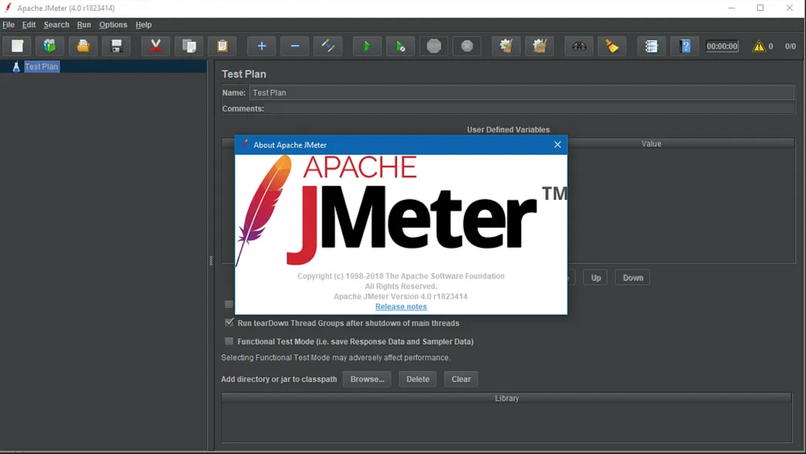
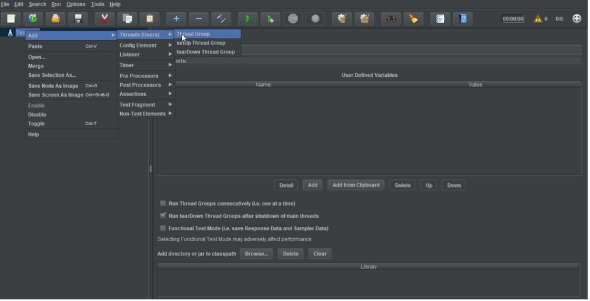
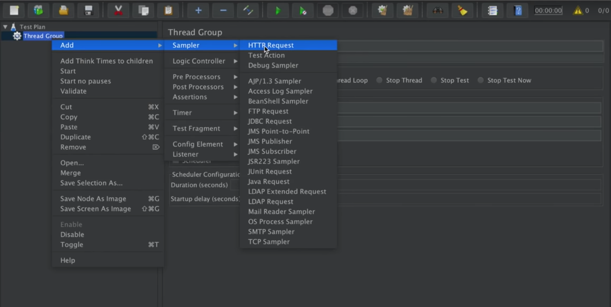
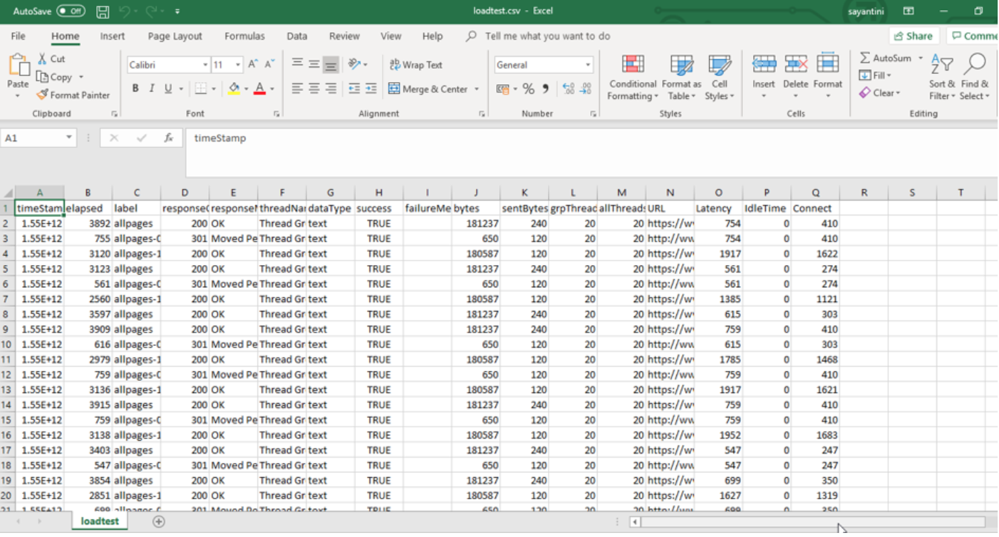

In last week blog we installed JMeter and in this week blog we will be doing Load Testing using JMeter.
What is Load Testing?
Load teasting is a type of testing that determines the performance of the system. It allows you to see the performance of the system before launching it into real life. It exames the behavior of the system how it will behave during normal and high loads.
To perform a load test you need a performance testing tools like JMeter. There are many tools are available but in this blog we will be using JMeter.
Since we have installed JMeter on our machine from last blog, i will be diving into its setup for performance test.
If you are using Windows you can just go to the JMeter /bin file and find for "jmeter.bat" file and it will open the GUI but if you are using linx or mac you will need to cd in to your JMeter file and go to /bin and run this command in your terminal.
sh jmeter.sh
This will open up the Apache JMeter Gui on your system.
You need to creat a test plan in the JMeter and thread groups once JMeter stat runing.
You can creat a thread group by double clicking on your test plan.
Next creat a HTTP Request by double clicking on the thread group where you will be adding the website or IP you want Load test and save your test plan.
Once you are done creating HTTP Request and thread group, you need to add IP or server name in HTTP Request and assignment number of users who will be going on the server in thread group.
After adding users you are ready to run the test. There are two ways to run this test GUI and Command line. To run a test in GUI you can just simply click on the play button and it will run the test. However, if you want to run a test through commad line you need to run this command:
jmeter -n -t Userssundush_nDownloadspache-jmeter-5.1inLoadTestedureka.jmx -l Userssundush_nDownloadspache-jmeter-5.1inLoadTestloadtest.csv
This command will store a csv file of you test.
These were the steps involved in performing a test through command prompt. To see the graphs you can see them through GUI by adding view results tree in HTTP Request.